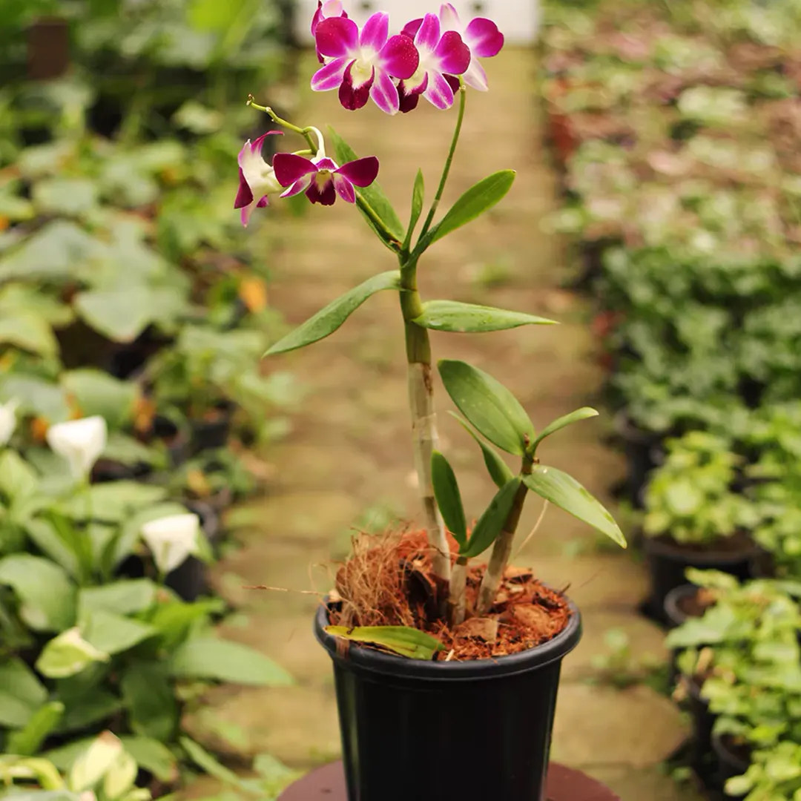

Orchid
Orchids, known for their elegance, are also powerful medicinal plants used in traditional practices like Ayurveda and Chinese medicine. Beyond their beauty, they bring a bouquet of healing benefits to the body, skin, and mind.
🌿 Medicinal Benefits
- Skin Health: Vitamin A and antioxidants rejuvenate skin and reduce wrinkles.
- Ulcers: Orchid juice helps soothe ulcers and stomach discomfort.
- Eye Health: Rich in Vitamin C & E, supports vision and eye health.
- Digestive Aid: Used to treat constipation, acidity, and promote digestion.
- Stress Relief: Aromatic properties aid in calming anxiety and stress.
- Traditional Remedies: Used for ailments including TB, arthritis, paralysis, snake bites, and more.
- Antimicrobial Effects: Active compounds fight bacteria and reduce inflammation.
- Anti-cancer Potential: Some species exhibit tumor-fighting properties.
🍽️ Recipes & Edible Uses
Orchid blooms are edible and have a crisp taste, similar to leafy greens. You can use them:
- In salads, stir-fries, or candied as dessert toppings
- In Zambian cuisine, Orchid tubers are used to make Chikanda, also known as African polony
🛒 Where to Buy
Orchids are widely available online. Here's a trusted source:
Buy Orchid on Amazon